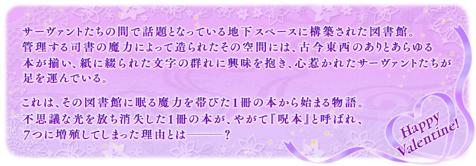

◆活動舉辦期間◆
2019年2月6日(三) 17:00～2月20日(三) 11:59
◆活動概要◆
舉辦期間限定活動「情人節2019 語音＆書信收藏！～紫式部與7本詛咒書～」！
在情人節前所發生，從圖書館消失的1本書與需要吸收製作巧克力用的魔力資源，與Servant們一起回收7本詛咒書吧！
挑戰活動關卡收集「詠詩點數」，入手活動交換道具「鎖定巧克力」「驚喜巧克力」，從中意的Servant收到情人節禮物吧！
還有，本活動中領取禮物時會發展Servant的付語音訊息！
※可交付「鎖定巧克力」「驚喜巧克力」來領取情人節禮物的Servant，只限有召喚履歴的Servant。
◆活動參加條件◆
滿足以下條件的Master才能參加
・通過「特異點F 炎上汙染都市 冬木」
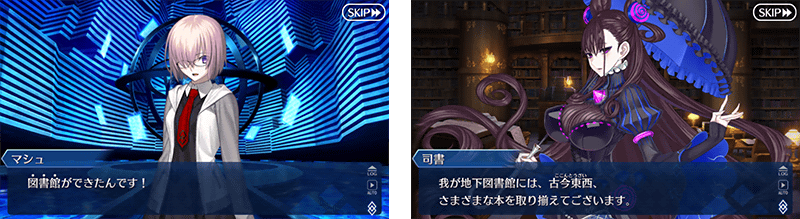
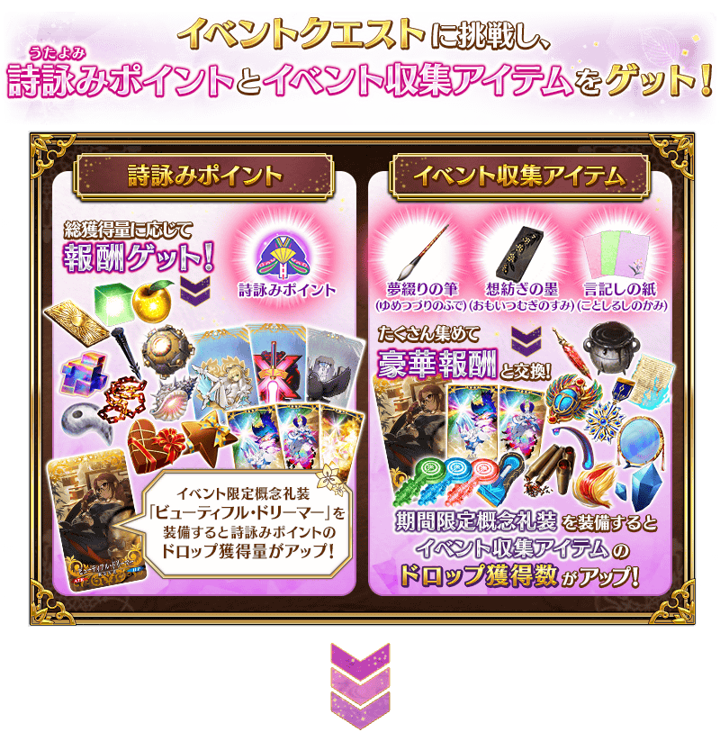
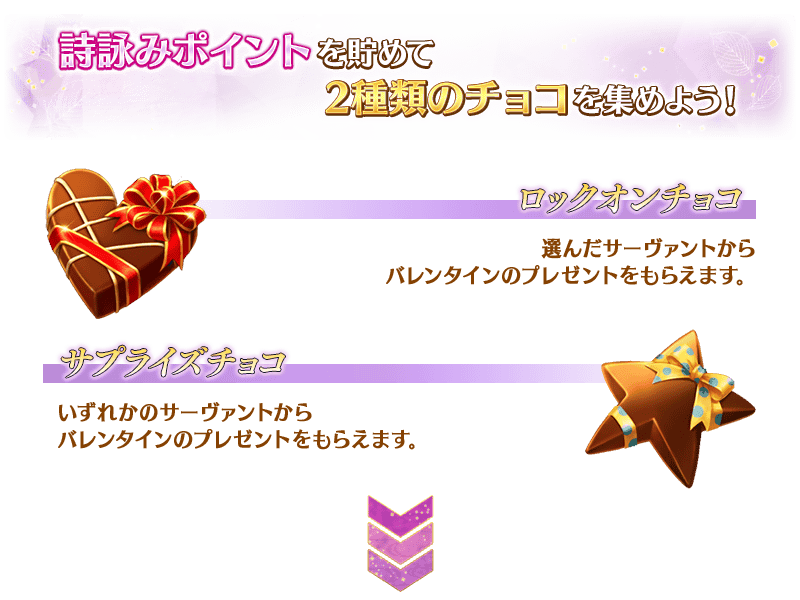
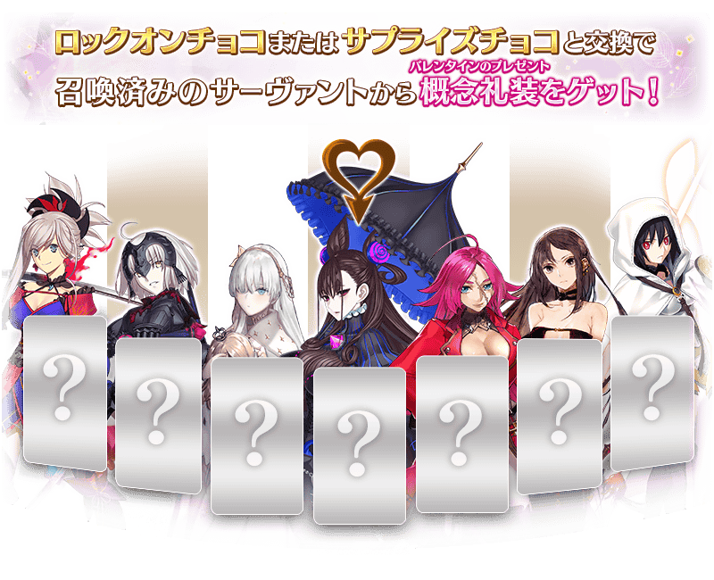
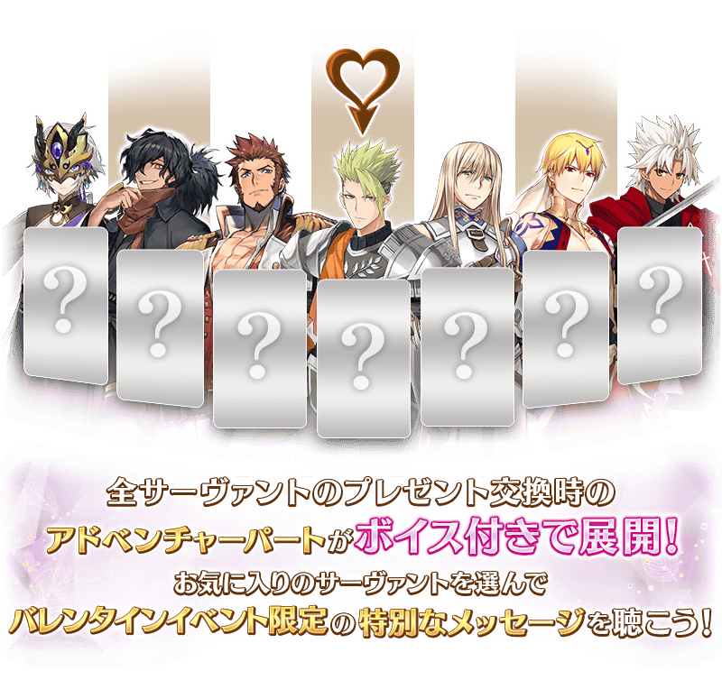
※2/8(五) 17:00圖片修正
◆參加過在2018年以前舉辦情人節活動的玩家注意◆
※請注意付語音的只限本活動中發生的收到禮物(概念禮裝)事件，可在MyRoom「圖鑑(マテリアル)」閲覧的2018年以前情人節活動不會付語音。
※請注意想將付語音事件登錄到MyRoom的「圖鑑(マテリアル)」，必須在本活動中收到巧克力與禮物(概念禮裝)。就算在以前情人節活動中收到過禮物(概念禮裝)，這次還是需要再次交換巧克力與禮物。
※如果持有以前活動中入手的禮物(概念禮裝)，也可發生收到禮物事件，播放事件後會登錄在「圖鑑(マテリアル)」。
※如果持有以前活動中入手的禮物(概念禮裝)，就算發生收到禮物事件也無法領取禮物(概念禮裝)。該情況，在販賣持有禮物(概念禮裝)或使用在強化用素材後，於活動道具交換的「收到巧克力」「交付巧克力」領取禮物(概念禮裝)。
◆關於從瑪琇・基利艾拉特收到禮物事件的注意◆
※在通過本活動的主線關卡1節後，「巧克力女士的大驚小怪 -Valentine2016-」中實裝的從「瑪琇・基利艾拉特」收到禮物時的事件，會在付語音的MyRoom「圖鑑(マテリアル)」內登錄到「情人節2019 語音＆書信收藏！～紫式部與7本詛咒書～」。
※就算未參加過去的活動，本活動中滿足上述條件的話，可觀賞從「瑪琇・基利艾拉特」收到禮物時的付語音事件。
※就算於達文西工房的「稀有稜鏡交換」獲得概念禮裝「カルデアスタンダード」，也不會發生從瑪琇・基利艾拉特收到禮物的事件。
享受故事的主線關卡將逐日開放。
通過主線關卡1節的話，會開放收集活動收集道具的自由關卡。
之後的自由關卡是藉由通過主線關卡及自由關卡來開放。
【主線關卡的舉辦期間】
| 關卡 | 舉辦期間 |
|---|---|
| 主線關卡1節 | 2月6日(三) 17:00～ 2月20日(三) 11:59 |
| 主線關卡2節 | 2月7日(四) 17:00～ 2月20日(三) 11:59 |
| 主線關卡3節 | 2月8日(五) 17:00～ 2月20日(三) 11:59 |
| 主線關卡4節 | 2月9日(六) 17:00～ 2月20日(三) 11:59 |
| 主線關卡5節 | 2月10日(日) 17:00～ 2月20日(三) 11:59 |
| 主線關卡6節 | 2月11日(一) 17:00～ 2月20日(三) 11:59 |
| 主線關卡7節 | 2月12日(二) 17:00～ 2月20日(三) 11:59 |
做為詠詩點數達成報酬獲得的「鎖定巧克力」「驚喜巧克力」可在活動道具交換的「收到巧克力」「交付巧克力」交換情人節禮物(概念禮裝)。
◆交換期間◆
2019年2月6日(三) 17:00～2月27日(三) 11:59
※活動道具交換期間結束後「鎖定巧克力」「驚喜巧克力」會消失。
※「鎖定巧克力」及「驚喜巧克力」在活動舉辦期間結束後才能交換QP。
在活動道具交換選擇「收到巧克力」或「交付巧克力」
在活動道具交換選擇「收到巧克力」主要是從女性Servant收到情人節禮物，選擇「交付巧克力」則主要是從男性Servant。
關於一部份的Servant，則為「收到巧克力」「交付巧克力」雙方的對象，收到的禮物和事件內容各有差異。
※請注意可領取情人節禮物的Servant，只限有召喚過履歴的Servant。沒有召喚履歴的Servant為對象外。
※想從紫式部領取情人節禮物，必須通過本活動的主線關卡。
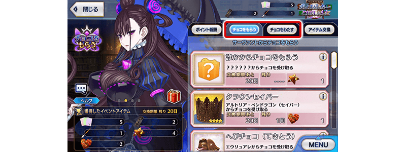
選擇與巧克力交換的禮物
從顯示的禮物之中任意選擇，選擇「從誰收到巧克力(交付巧克力給誰)」吧！
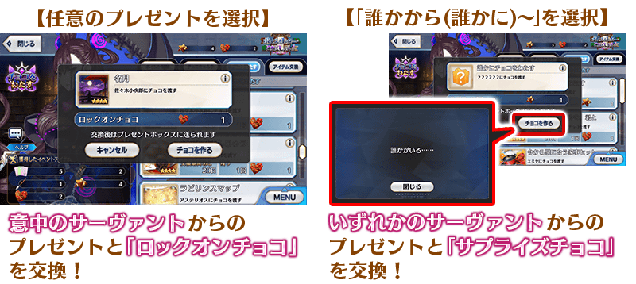
得到來自Servant的情人節禮物！
可從Servant獲得概念禮做為禮物。本活動中，收到禮物時的事件全Servant皆付語音！
還有，已經持有在以前情人節活動入手的禮物(概念禮裝)，也可在本活動中再次觀賞收到禮物的事件。
※「鎖定巧克力」交換的禮物與「驚喜巧克力」交換的禮物，在交換時的事件內容及可入手概念禮裝上沒有差異。
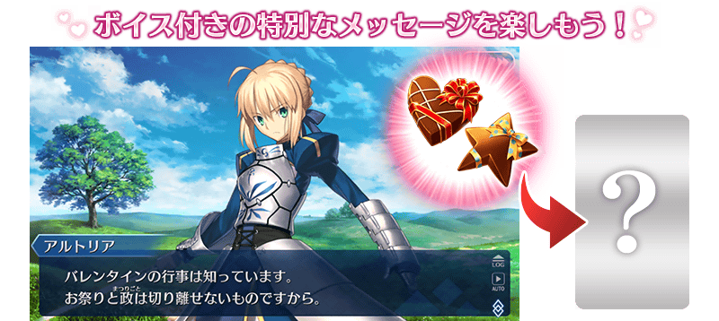

詠詩點數的總獲得量到達一定量的話，可獲得達成報酬。
除了「鎖定巧克力」「驚喜巧克力」外，還能獲得活動限定指令紋章等。
達成報酬可在點擊管理室(ターミナル)畫面右上的「活動報酬」鍵所顯示的「詠詩點數報酬」畫面確認。
※詠詩點數的總獲得量是計算在活動關卡掉落所獲得的詠詩點數。
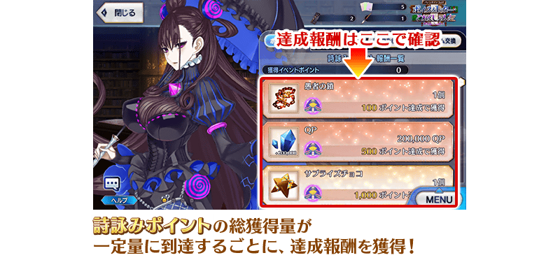
自期間限定活動「情人節2019 語音＆書信收藏！～紫式部與7本詛咒書～」追加1種新道具！
為今後新登場Servant的技能強化及靈基再臨必要的道具。
除了本活動的活動關卡戰利品、活動道具交換的報酬外，也能靠今後配信的關卡和期間限定活動等獲得。
【2月12日(二) 17:00追記】
以通過期間限定活動「情人節2019 語音＆書信收藏！～紫式部與7本詛咒書～」所有主線關卡及「終局特異點」的Master做為對象，開放高難易度的挑戰關卡。
挑戰關卡就算通過後也不會消失，可以變更Servant和概念禮裝的組合後無數次挑戰。
※關卡通過報酬、戰利品、Master經驗值、魔術禮裝經驗值、絆點數只可在初次通過時獲得。
◆挑戰關卡開放時間◆
2019年2月12日(二) 17:00～
◆挑戰關卡參加條件◆
滿足以下條件的Master才能參加
・通過期間限定活動「情人節2019 語音＆書信收藏！～紫式部與7本詛咒書～」的所有主線關卡
・通過「終局特異點」
◆挑戰關卡初次通過報酬◆
傳承結晶 1個
超值攻略方法・其1
做為初登場的Servant「紫式部」在期間限定活動「情人節2019 語音＆書信收藏！～紫式部與7本詛咒書～」的活動關卡中會得到自身的攻擊威力提升100%及在關卡通過時得到的自身的絆點數獲得量提升50%的加成！
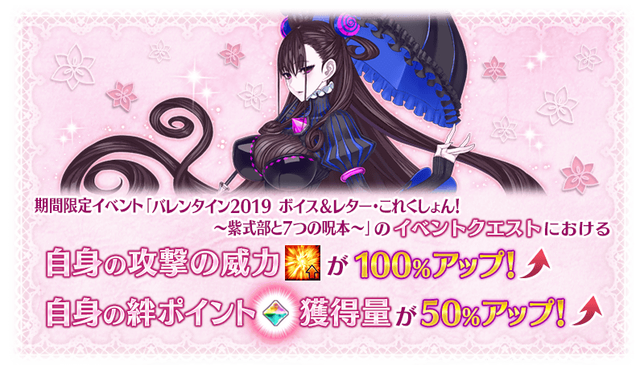
超值攻略方法・其2
裝備活動限定概念禮裝提升詠詩點數的掉落獲得量！
裝備可靠活動道具交換入手的活動限定概念禮裝「ビューティフル・ドリーマー」的話，會提升詠詩點數的掉落獲得量。
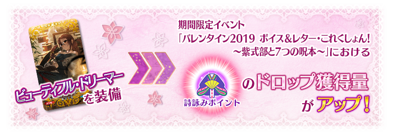
※2/8(五) 17:00圖片修正
另外，裝備從Servant收到的「情人節禮物」概念禮裝的話，會提升詠詩點數的掉落獲得量！
※禮物(概念禮裝)為活動加成篩選器「活動加成概念禮裝 個別篩選器」的對象外，無法個別設定顯示/非顯示。
【情人節禮物】

超值攻略方法・其3
裝備期間限定概念禮裝提升活動收集道具的掉落獲得數！
裝備在聖晶石召喚Pick Up的期間限定概念禮裝「ビター・スイート」「ワルキューレ・スタイル」「メモリー・オブ・クオリア」的話，會提升活動收集道具「綴夢之筆」「紡想之墨」「記言之紙」各自的掉落獲得數提升。
※請注意各關卡的道具掉落率並非100％。
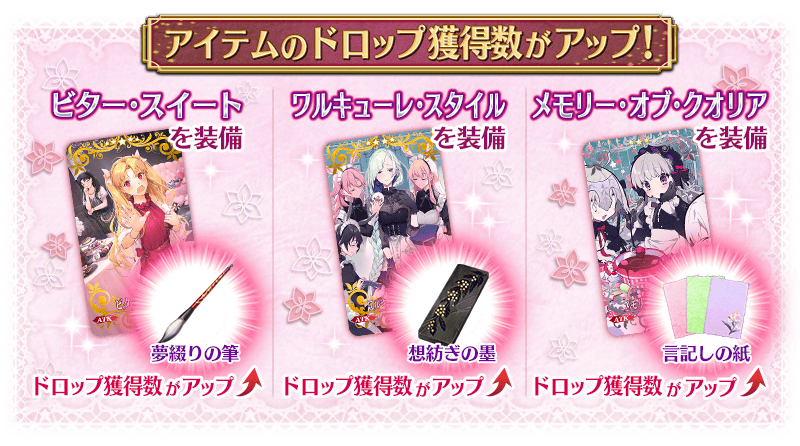
活動收集道具可自點擊管理室(ターミナル)畫面右上「活動報酬」鍵所顯示的「活動道具交換」畫面，交換以下的道具。
※關於英靈結晶・流星之芙芙ALL★4(HP)、英靈結晶・日輪之芙芙ALL★4(ATK)，在通過本活動的所有主線關卡才能交換。 ※鎖定巧克力、驚喜巧克力交換100,000QP會在活動舉辦期間結束後開放。
◆交換期間◆
2019年2月6日(三) 17:00～2月27日(三) 11:59
※活動道具交換期間結束後「綴夢之筆」「紡想之墨」「記言之紙」「鎖定巧克力」「驚喜巧克力」會消失。
◆能用綴夢之筆交換的道具◆
|
【活動限定概念禮裝】 【技能強化＆靈基再臨素材】 【靈基再臨素材】 【其他道具】 |
◆能用紡想之墨交換的道具◆
|
【活動限定概念禮裝】 【技能強化＆靈基再臨素材】 【靈基再臨素材】 【其他道具】 |
◆能用記言之紙交換的道具◆
|
【活動限定概念禮裝】 【技能強化＆靈基再臨素材】 【其他道具】 |
◆能用鎖定巧克力、驚喜巧克力交換的道具◆
|
【其他道具】 |
| 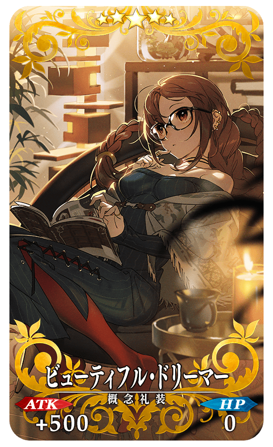 |
★★★★★SSR ※2/8(五) 17:00圖片修正 |
| 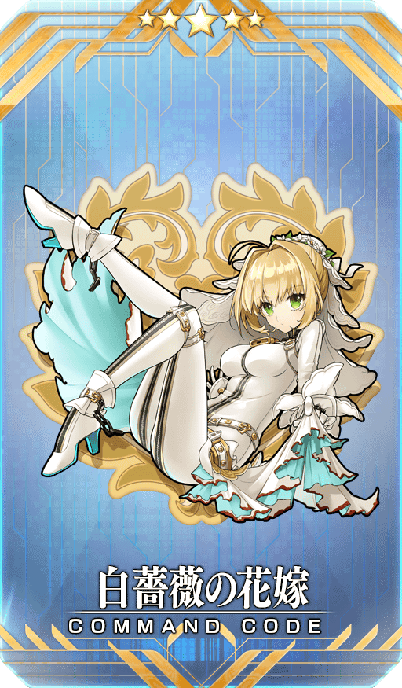 |
【活動限定】 |
| 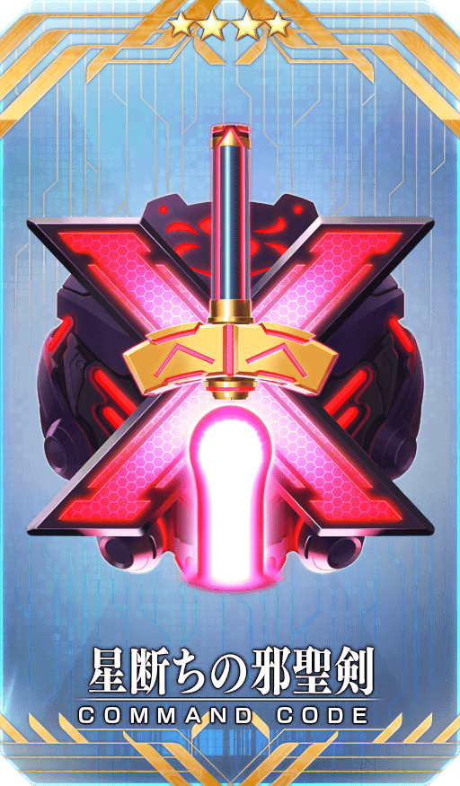 |
★★★★SR |
| 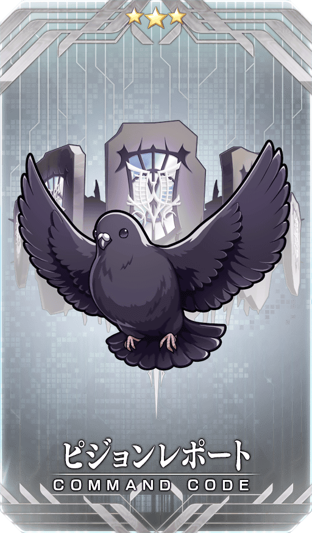 |
★★★R |
其他還有，期間限定「情人節2019Pick Up召喚(每日交替)」同時舉辦！
關於詳情請自下述橫幅確認。